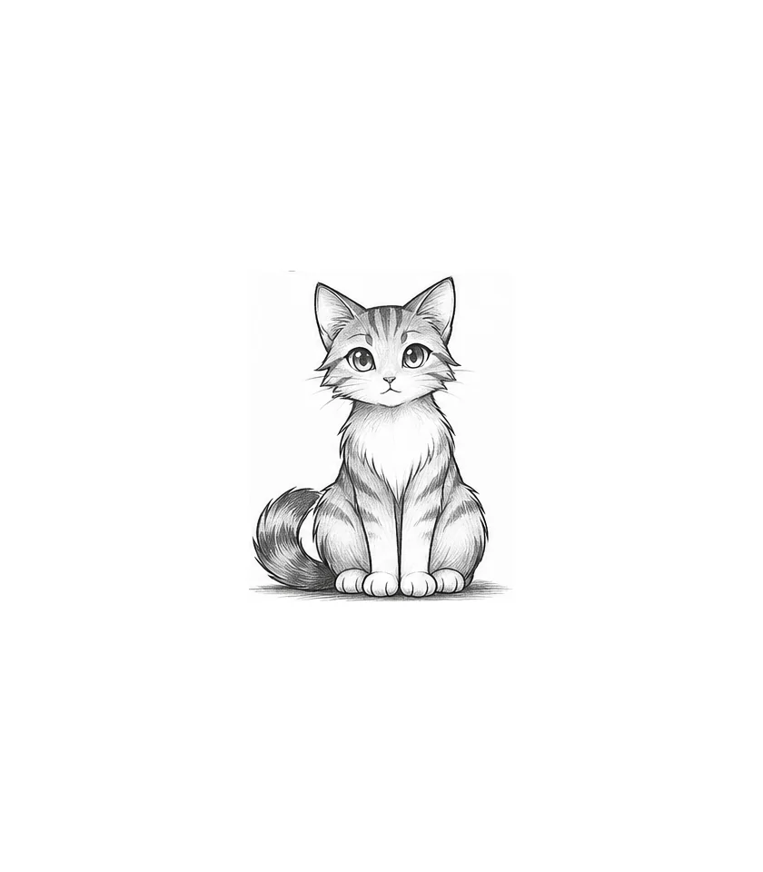
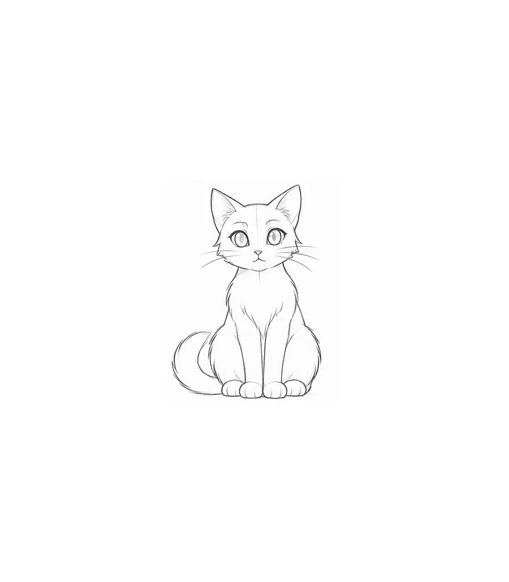
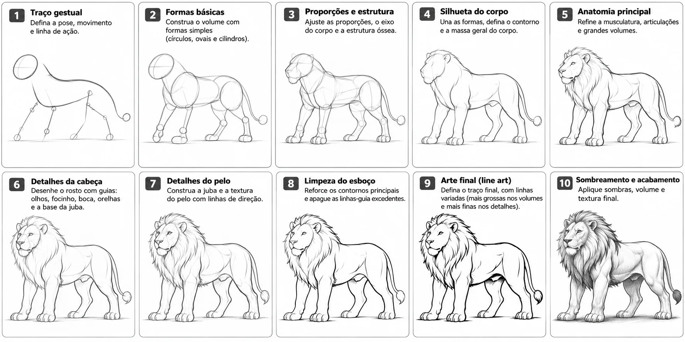

Desenhar mangá se aprende em etapas.
88 aulas em sete módulos. Cada uma divide um desenho em passos curtos, com checklist do que observar, e você pratica num editor que roda no navegador. Sem cadastro e sem custo.
- Módulos
- 7
- Aulas
- 88
- Etapas
- 141

Resultado de uma das aulas do módulo Animais.
Do volume ao acabamento
Todo desenho começa com formas simples. As aulas seguem sempre essa ordem.
- 1Três volumes

- 2Assento e base

- 4Patas e cauda

- 6Contorno do corpo

- 8Detalhes da face

- 10Acabamento
Aula de exemplo: Gato sentado, 10 etapas. Mostramos seis.
O curso
Sete módulos, em ordem. Quem já desenha pode ir direto ao que quer treinar.
Pranchas de estudo
Folhas completas na proporção original, para ampliar, estudar e baixar.



Desenhe no navegador, sem instalar nada.
O Smudge é o editor de desenho do MangaDojo. Você abre a referência de uma aula, desenha por cima ou ao lado, e exporta em PNG. Seus projetos ficam salvos neste navegador.
- Camadas e máscarasEsboço e arte-final separados, com máscaras reversíveis.
- Estabilização do traçoSuaviza movimentos bruscos sem mudar a espessura.
- Pressão de canetaResponde a canetas com sensibilidade, quando o aparelho oferece.
- Régua de perspectiva e retículasPara fundos, cenários e a textura clássica do mangá.
Perguntas frequentes
Preciso pagar ou criar conta?
Não. O curso, as pranchas e o Smudge são gratuitos e funcionam sem cadastro.
Onde fica o meu progresso?
No próprio navegador, neste aparelho. Se você trocar de navegador ou limpar os dados do site, o progresso e os projetos do Smudge não vêm junto. Exporte seus desenhos em PNG para guardá-los.
Funciona no celular e no tablet?
Funciona no navegador de celulares, tablets e computadores. Os testes em aparelhos Android e iOS e com canetas físicas ainda estão em andamento, então o desenho no celular pode ter arestas.
Por onde começo?
Pelo módulo 1, Fundamentos. Se você já desenha, abra o curso e escolha o módulo que quer treinar.
Posso usar as imagens do site?
Cada imagem tem origem e licença registradas na página de créditos. Antes de reutilizar qualquer material, confira lá.